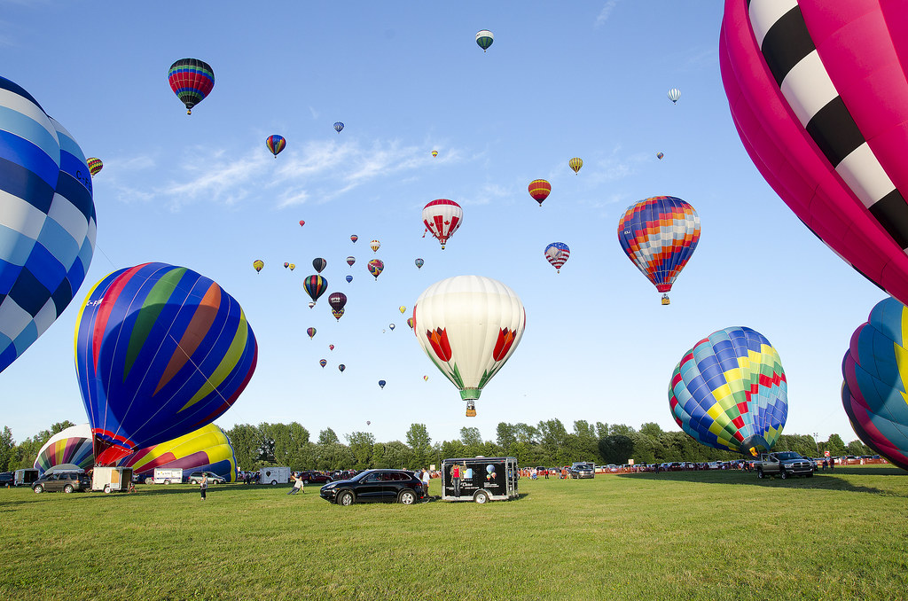
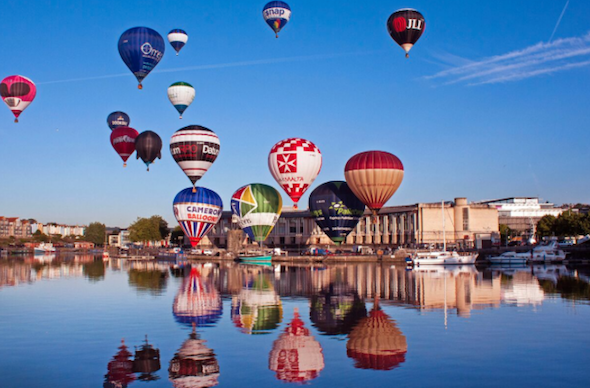
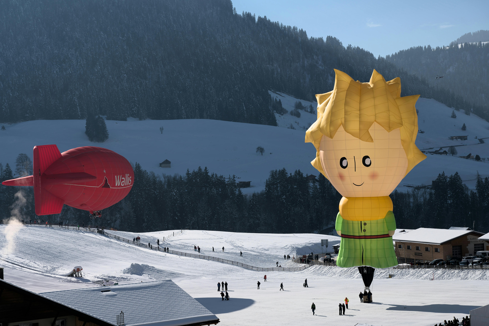
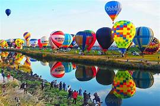
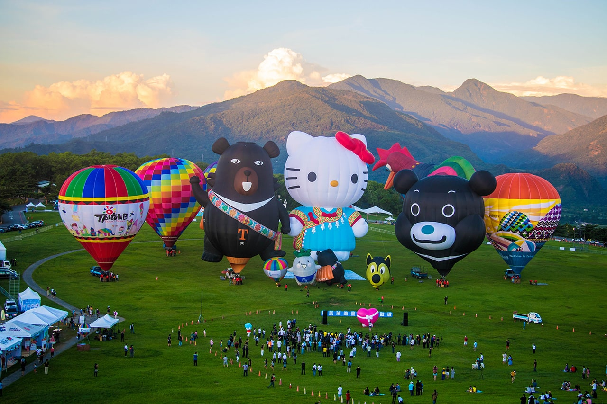
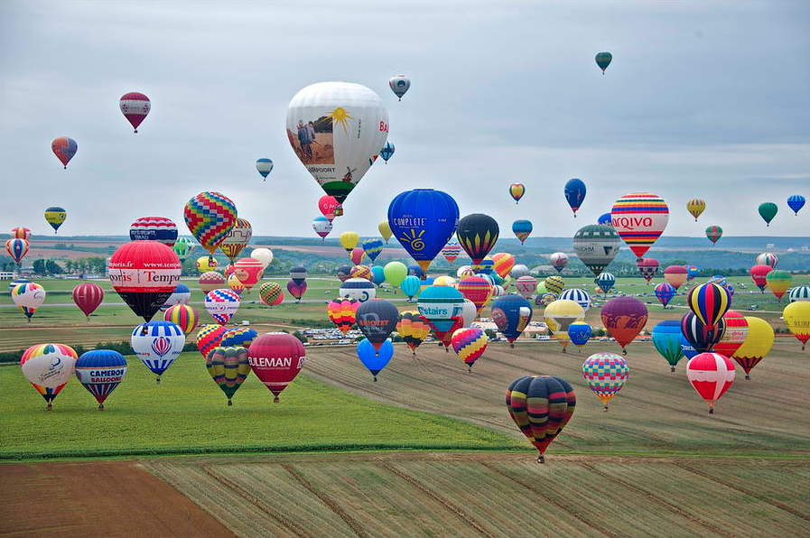
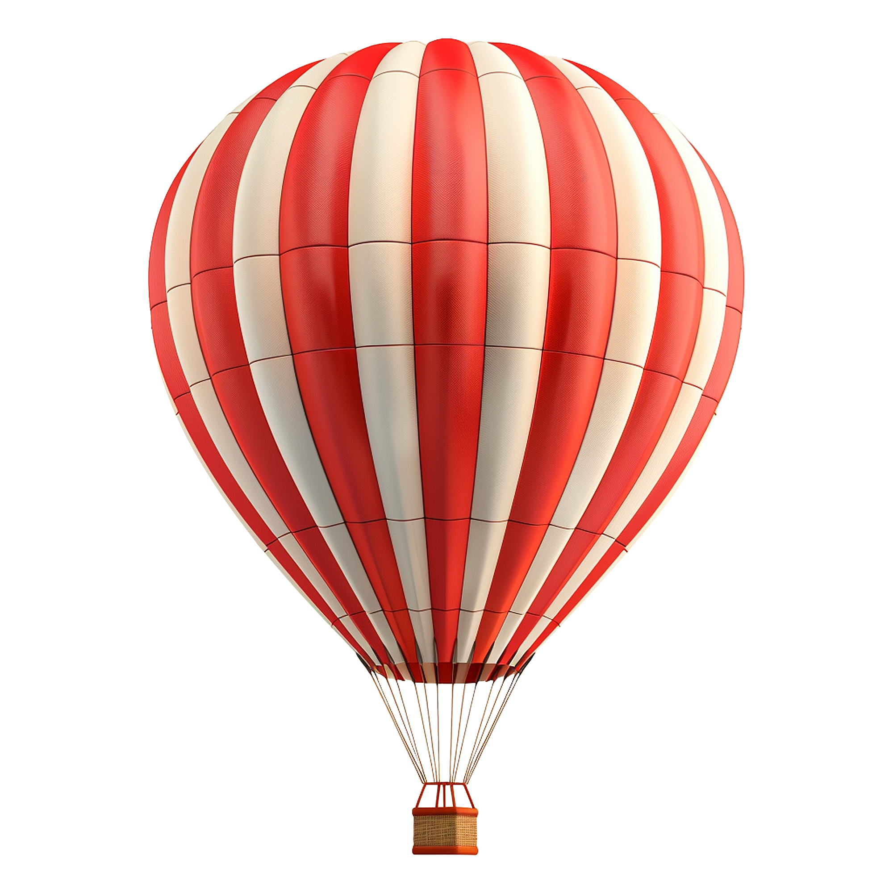
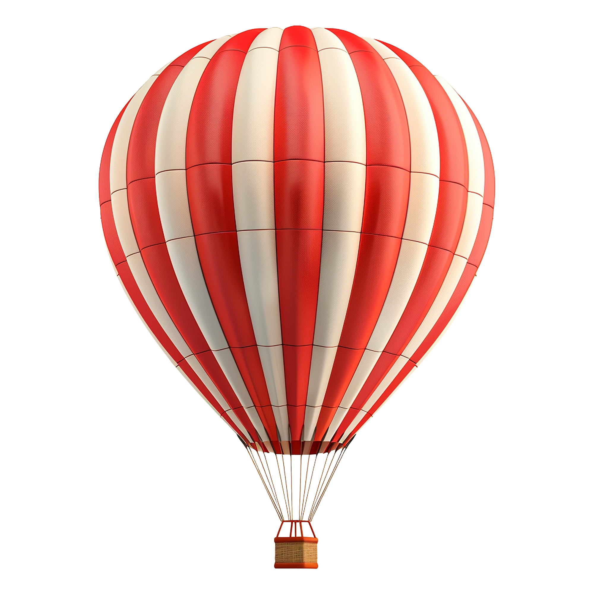

Les festivals à travers le monde
Albuquerque International Balloon Fiesta (États-Unis)
Le plus grand festival de montgolfières au monde, se déroulant chaque octobre à Albuquerque, Nouveau-Mexique.

Bristol International Balloon Fiesta (Royaume-Uni)
Un événement majeur qui a lieu chaque août à Bristol, attirant des centaines de montgolfières et des milliers de spectateurs.

Festival International de Ballons de Château-d'Oex (Suisse)
Un magnifique festival hivernal se tenant en janvier dans les Alpes suisses, célèbre pour ses paysages enneigés.

Saga International Balloon Fiesta (Japon)
Le plus grand festival de montgolfières en Asie, se déroulant chaque automne dans la préfecture de Saga.

Taiwan International Balloon Festival (Taïwan)
Un festival coloré et animé qui se tient chaque été à Taitung, avec de nombreuses activités et spectacles.

Mondial Air Ballons (France)
Le plus grand rassemblement de montgolfières en Europe, se déroulant tous les deux ans en Lorraine, attirant des participants du monde entier.


 
